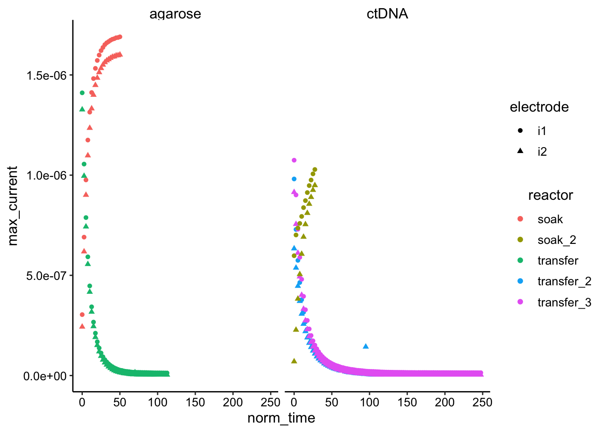
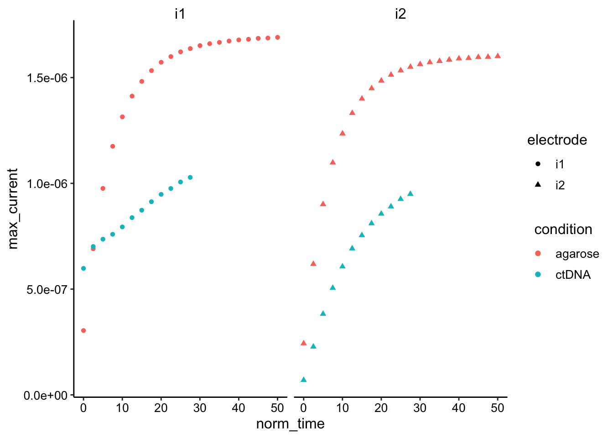
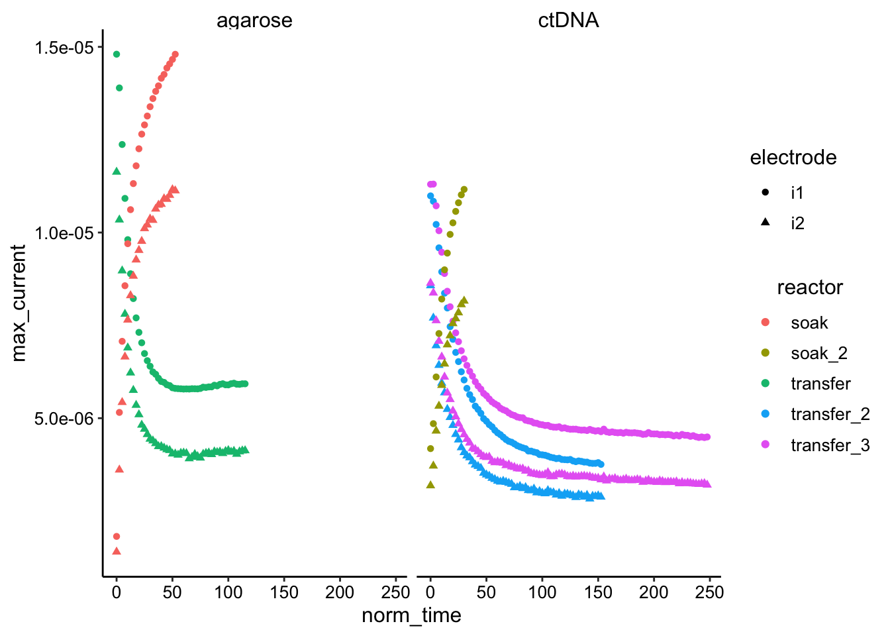
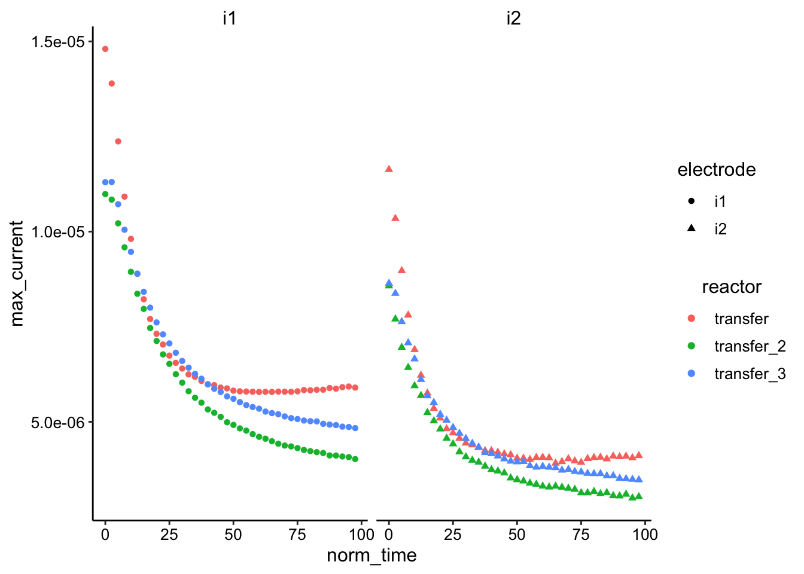
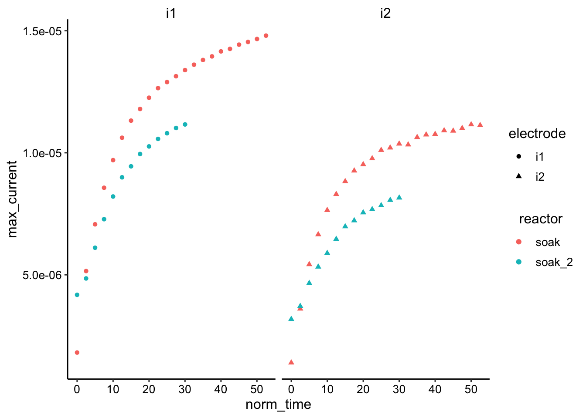
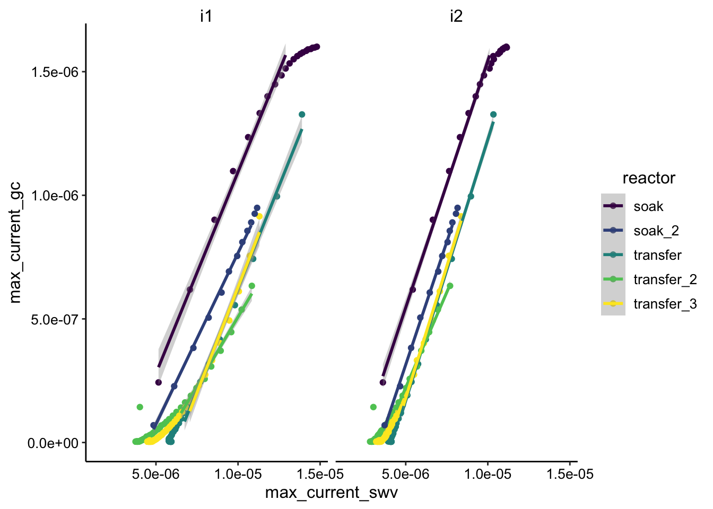

Agarose ctDNA
Analysis
Scott Saunders
08_13_19
library(tidyverse)
library(cowplot)
library(broom)
library(modelr)
library(viridis)
library(lubridate)
library(hms)
library(knitr)
library(kableExtra)
knitr::opts_chunk$set(tidy.opts=list(width.cutoff=60),tidy=TRUE, echo = TRUE, message=FALSE, warning=FALSE, fig.align="center")
source("../../tools/echem_processing_tools.R")
source("../../tools/plotting_tools.R")
theme_set(theme_1())Data
# Agarose
gc_agarose <- read_csv("../../06_06_19_agarose_PYO_2/Processing/06_06_19_processed_gc_max_agarose.csv")
swv_agarose <- read_csv("../../06_06_19_agarose_PYO_2/Processing/06_06_19_processed_swv_max_agarose.csv")
swvGC_agarose <- read_csv("../../06_06_19_agarose_PYO_2/Processing/06_06_19_processed_swvGC_agarose.csv")
# Agarose + ctDNA
gc_ctDNA <- read_csv("../processing/08_13_19_processed_gc_max_ctDNA.csv")
swv_ctDNA <- read_csv("../processing/08_13_19_processed_swv_max_ctDNA.csv")
swvGC_ctDNA <- read_csv("../processing/08_13_19_processed_swvGC_ctDNA.csv")GC time course
Overview
df_gc <- bind_rows(gc_agarose %>% mutate(condition = "agarose"),
gc_ctDNA %>% mutate(condition = "ctDNA")) %>% group_by(condition,
reactor) %>% mutate(min_time = min(minutes)) %>% mutate(norm_time = minutes -
min_time)
ggplot(df_gc, aes(x = norm_time, y = max_current, color = reactor,
shape = electrode)) + geom_point() + facet_wrap(~condition)
Transfer runs
ggplot(df_gc %>% filter(norm_time < 100) %>% filter(reactor !=
"soak" & reactor != "soak_2"), aes(x = norm_time, y = max_current,
color = condition, shape = electrode)) + geom_point() + facet_wrap(~electrode) Looks like their may actually be a small difference especially when normalizing by the starting values…
Looks like their may actually be a small difference especially when normalizing by the starting values…
Soak Runs
ggplot(df_gc %>% filter(norm_time < 100) %>% filter(reactor ==
"soak" | reactor == "soak_2"), aes(x = norm_time, y = max_current,
color = condition, shape = electrode)) + geom_point() + facet_wrap(~electrode) Hard to tell without normalization / letting it go longer…but ctDNA may actually be slower.
SWV time course
Overview
df_swv <- bind_rows(swv_agarose %>% mutate(condition = "agarose"),
swv_ctDNA %>% mutate(condition = "ctDNA")) %>% group_by(condition,
reactor) %>% mutate(min_time = min(minutes)) %>% mutate(norm_time = minutes -
min_time)
ggplot(df_swv, aes(x = norm_time, y = max_current, color = reactor,
shape = electrode)) + geom_point() + facet_wrap(~condition)
Transfer Runs
ggplot(df_swv %>% filter(reactor != "soak" & reactor != "soak_2") %>%
filter(norm_time < 100), aes(x = norm_time, y = max_current,
color = reactor, shape = electrode)) + geom_point() + facet_wrap(~electrode) Again, looks like the ctDNA may actually be slower, especially after normalizing. Transfer 2 / 3 are replicates and look pretty similar, so that’s good.
Soak Runs
ggplot(df_swv %>% filter(reactor == "soak" | reactor == "soak_2"),
aes(x = norm_time, y = max_current, color = reactor, shape = electrode)) +
geom_point() + facet_wrap(~electrode)
Same as before…a little hard to tell without normalization or running longer. ctDNA is possibly slower.
SWV vs. GC
Overview
df_swv_gc <- bind_rows(swvGC_agarose %>% mutate(condition = "agarose"),
swvGC_ctDNA %>% mutate(condition = "ctDNA"))
ggplot(df_swv_gc, aes(x = max_current_swv, y = max_current_gc,
color = reactor)) + geom_point() + facet_wrap(~electrode_swv) +
scale_color_viridis_d() + geom_smooth(data = df_swv_gc %>%
filter(rep <= 10), method = "lm")
Overall slopes look pretty similar. Transfer_2 is an obvious outlier with a shallower slope.
Conclusions
- Need to actually perform Dphys and Dap calculations.
- Probably need to repeat both experiments (and maybe glycerol condition too)…acquisitions take a while though. How long to run??